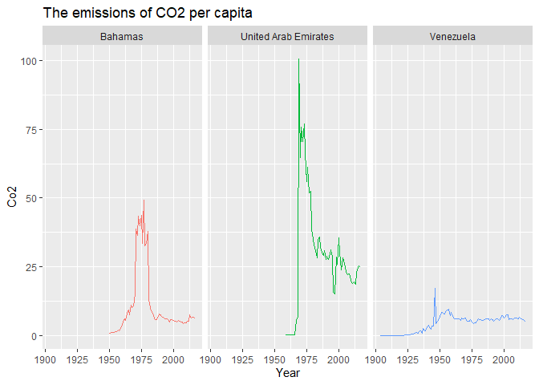
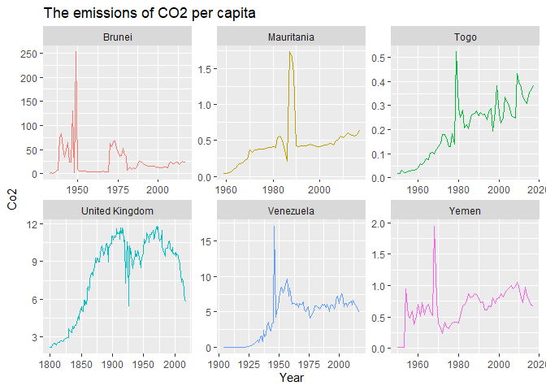
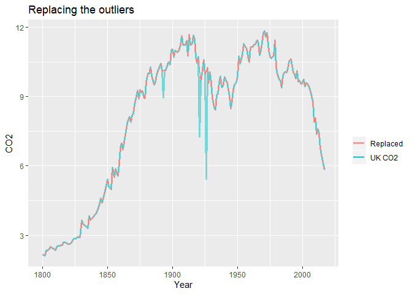
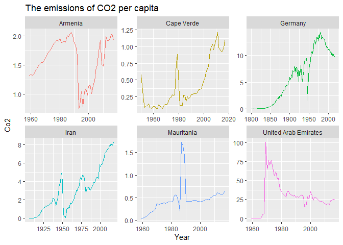
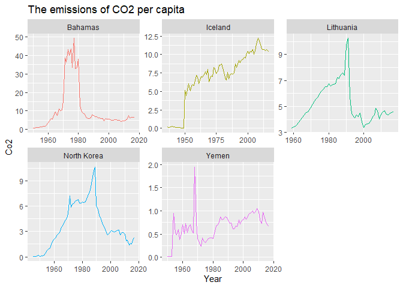

Introduction
On a daily basis, economical, technological and political changes cause air pollution, which is currently one of the most pressing environmental issues around the globe. It is particularly acute in large cities with the rising level of industrialization and growing urbanization. The polluted air we breathe results in serious health disorders and decreases the quality of life. Before steps are taken to decrease the harmful effect of daily produced pollutants, certain measurements are required.
Government agencies use air quality index to communicate with the public. An example of such communication is recommendations to reduce or avoid outdoor physical exertion when the air quality index (AQI) is too high. Different countries have their own air quality indices and they use their own method of calculation and health risk categories. Typically, outdoor1 air pollution can be defined as the emission of harmful substances into the atmosphere. This broad definition encapsulates a number of pollutants, including:
- sulphur dioxide ($SO_2$),
- nitrogen oxides ($NO_x$),
- ozone ($O_3$),
- particulate matter,
- carbon monoxide ($CO$)
- carbon dioxide ($CO_2$)
- and volatile organic compounds ($VOC_s$).
We took the historical data of annual emissions of carbon dioxide per person, based on territorial emissions derived by Our World in Data. Per capita emissions (production-based) were calculated dividing the total national $CO_2$ emissions per year by population estimates. The summary of the dataset is presented below. The number of observations in the initial data is 42,844 and the range of variable time span is 1751 – 2017. For the further analysis the observation before 1970 that have value of zero are omitted. The dataset used in this analysis can be found here.
# load the required libraries used in the article
if (!require("pacman")) install.packages("pacman")
pacman::p_load(ggplot2, dplyr, kableExtra, tsoutliers, forecast, TSA)
co <- read.csv("co-emissions-per-capita.csv")
cond <- which(co$Year < 1970 & co$Co2 == 0)
co <- co[-cond,]
We can look at the summary of the dataframe.
options(knitr.kable.NA = '')
knitr::kable(summary(co), digits=2) %>%
kable_styling(bootstrap_options = "striped", full_width = F)
| Entity | Code | Year |
|---|---|---|
| Canada : 218 | CAN : 218 | Min. :1751 |
| Germany : 218 | DEU : 218 | 1st Qu.:1948 |
| Poland : 218 | GBR : 218 | Median :1975 |
| United Kingdom: 218 | POL : 218 | Mean :1965 |
| United States : 218 | USA : 218 | 3rd Qu.:1996 |
| France : 210 | FRA : 210 | Max. :2017 |
| (Other) :15560 | (Other):15560 |
The variables Entity and Code show the country and/ or area and its
code, where the level of carbon dioxide was measured. The variables
Year and Co2 show the time span of variable Co2 and the carbon
dioxide measured in tones ($CO_2$ data has been converted from tones of
carbon to tones of carbon dioxide ($CO_2$) using a conversion factor of
3.664).
We will now explore the pattern of $CO_2$ by looking at the data of 3 particular countries: Venezuela, United Arab Emirates, and the Bahamas.
co %>% filter(Entity %in% c("Venezuela", "United Arab Emirates", "Bahamas")) %>%
ggplot() + geom_line(aes(x = Year, y = Co2, color = Entity)) +
theme(legend.position="None") + facet_grid(.~Entity, scales = "fixed") +
ggtitle("The emissions of CO2 per capita")

These countries were not selected randomly. If you look at the time series of these countries separately, the different types of outliers: additive, innovational, and level shift outliers can be found in the time series of $CO_2$ in Venezuela, the United Arab Emirates and the Bahamas correspondingly. Outliers are usually the unexpected spikes or dips of observations at given points in time.
Outliers and detection
Time series observations reveal frequent shifts in the data. The shifts in a time series that cannot be explained are referred to as outliers. One important reason to detect outliers is that they can represent an error. At the same time, these observations are inconsistent with the rest of the series and can dramatically influence the analysis, thus affecting the forecasting capacity of the time series model. So, to increase the prediction accuracy they must be removed before the analysis. Here are the most common types of outliers:
- Additive Outliers
- Level Shifts
- Transient Change
- Innovation Outliers
- Seasonal Level Shifts
Three of the aforementioned outliers are to be considered below. There
are different tools and methods to detect and deal with outliers (time
series decomposition, generalized extreme student deviation, ARIMA,
etc.). In order to detect the presence of outliers in the time series we
will use the R function tso() , an interface to the automatic
detection procedure provided in the package
tsoutliers.
The R package tsoutliers implements the Chen and Liu procedure for
the detection of outliers in time series. Different types of outliers
(by default: AO additive outliers; LS level shifts, IO
innovative outliers, etc.) can be selected in the function. The proposed
procedure may be applied both to general seasonal and nonseasonal ARMA
processes.
Additive Outliers
An additive outlier (AO) corresponds to an exogenous change of a single observation of the time series. Subsequent observations are unaffected by an additive outlier. Due to external causes, this type of outlier is usually associated with isolated incidents like measurement errors or impulse effects.
The graph indicates that the time series of the following countries can have an additive outlier/outliers:
- Brunei
- Mauritania
- Togo
- The United Kingdom
- Venezuela
- Yemen
AO <- co[co$Entity %in% c("Brunei", "Mauritania", "Togo", "United Kingdom", "Venezuela", "Yemen"), ]
ggplot(data = AO) + geom_line(aes(x = Year, y = Co2, color = Entity)) +
theme(legend.position="None") + facet_wrap(~Entity, scales = "free") +
ggtitle("The emissions of CO2 per capita")

We will now consider the time series of Venezuela and United Kingdom.
The plot above shows that the value of the year 1946 (17 tonnes of
carbon dioxide) in Venezuela is not typical for the data. To check this
assumption the tso function can be used.
tsoutliers::tso(ts(AO[AO$Entity == "Venezuela", "Co2"],
start = AO[AO$Entity == "Venezuela", "Year"][1]), types = "AO")
## Series: ts(AO[AO$Entity == "Venezuela", "Co2"], start = AO[AO$Entity == "Venezuela", "Year"][1])
## Regression with ARIMA(0,1,0) errors
##
## Coefficients:
## AO34
## 13.1953
## s.e. 0.4437
##
## sigma^2 estimated as 0.3976: log likelihood=-99.11
## AIC=202.21 AICc=202.33 BIC=207.5
##
## Outliers:
## type ind time coefhat tstat
## 1 AO 34 1937 13.2 29.74
We will now study the value of CO2 in Venezuela tested as an outlier (with the index of 34).
AO[AO$Entity == "Venezuela",][34,]
## Entity Code Year Co2
## 41780 Venezuela VEN 1946 17.03064
The procedure first detects outliers upon a chosen ARIMA model (which is
an iterative process), then it chooses the ARIMA model including the
outliers detected in the previous step and removes the outliers that are
not significant in the new fit. The procedure is repeated until no
outliers are detected or until a maximum number of iterations (by
default, 4) is reached (Chen and Liu, 2013). There is yet another TSA
function that can be used to check the existence of additive outliers.
detectAO(arima(ts(AO[AO$Entity == "Venezuela", "Co2"]),
order = c(0, 0, 0)), alpha = 0.05, robust = TRUE)
## [,1]
## ind 34.000000
## lambda2 4.238379
The time series of Brunei also detects an outlier between the years of
1947 and 1949. These, however, are not the only types of outliers data
can have. For example, the value of 1970 can be considered a level shift
outlier. Different types of outliers can be simultaneously checked using
the vector of possible types in the tso() function. Although, Chung
and Liu (2013) state that, from a computational standpoint, the strategy
of detecting outliers one by one may be the only feasible approach to
dealing with multiple outliers, it seems more appropriate to estimate
the outlier effects jointly rather than sequentially. Besides, a
procedure based solely on iteratively adjusted residuals may often
result in biased estimates for adjacent outliers.
tsoutliers::tso(ts(AO[AO$Entity == "United Kingdom", "Co2"],
start = AO[AO$Entity == "United Kingdom", "Year"][1]), types = c("AO","LS", "IO"))
## Series: ts(AO[AO$Entity == "United Kingdom", "Co2"], start = AO[AO$Entity == "United Kingdom", "Year"][1])
## Regression with ARIMA(1,2,2) errors
##
## Coefficients:
## ar1 ma1 ma2 AO94 IO122 AO127
## 0.5189 -1.7097 0.7403 -1.2028 -0.1929 -4.6164
## s.e. 0.1783 0.1424 0.1436 0.3247 0.1766 0.3261
##
## sigma^2 estimated as 0.181: log likelihood=-120.34
## AIC=254.68 AICc=255.22 BIC=278.31
##
## Outliers:
## type ind time coefhat tstat
## 1 AO 94 1893 -1.2028 -3.704
## 2 IO 122 1921 -0.1929 -1.092
## 3 AO 127 1926 -4.6164 -14.155
AO[AO$Entity == "United Kingdom", ][c(94,122,127),]
## Entity Code Year Co2
## 40421 United Kingdom GBR 1893 8.958951
## 40449 United Kingdom GBR 1921 7.245594
## 40454 United Kingdom GBR 1926 5.437124
As assumed, the levels of $CO_2$ in the year of 1893 and 1926 are treated as outliers. In addition, the algorithm found innovational outlier (see details about this type of outlier below) in the year 1921.
In forecasting models, removing outliers may be highly dangerous. If the
forecasting models are sensitive to outliers, we need to replace them,
because outliers will skew the coefficients. To deal with additive
outliers, the tsoutliers() function from the package forecast,
designed to identify and to suggest potential replacement values, can be
used. In our data of the United Kingdom there are three outliers and,
correspondingly, three replacements:
tsoutliers(ts(AO[AO$Entity == "United Kingdom", "Co2"],
start = AO[AO$Entity == "United Kingdom", "Year"][1]))
## $index
## [1] 94 122 127
##
## $replacements
## [1] 10.12905 10.18127 10.10963
replUnKing <- ts(AO[AO$Entity == "United Kingdom", "Co2"],
start = AO[AO$Entity == "United Kingdom", "Year"][1])
replUnKing[c(94, 122, 127)] <- c(10.12905, 10.18127, 10.10963)
An alternative useful function identifying and replacing outliers is
tsclean() from the same package. In this case, linear interpolation is
used to estimate missing values and to replace outliers.
replUnKing <- tsclean(ts(AO[AO$Entity == "United Kingdom", "Co2"],
start = AO[AO$Entity == "United Kingdom", "Year"][1]))
out <- data.frame(
UK = ts(AO[AO$Entity == "United Kingdom", "Co2"],
start = AO[AO$Entity == "United Kingdom", "Year"][1]),
replUnKing, Year = AO[AO$Entity == "United Kingdom", "Year"])
ggplot(data = out) +
geom_line(aes(x = Year, y = UK, color="#FC4E07"), size =1.1, alpha = 0.5) +
geom_line(aes(x = Year, y = replUnKing, color="#E7B800")) +
scale_color_discrete(name = " ", labels = c("Replaced", "UK CO2"))+
labs(y = "CO2", title = "Replacing the outliers")

Innovational Outliers
Innovational Outlier or Intervention Outlier (IO) corresponds to an endogenous change of a single innovation of the time series and is usually associated with isolated incidents such as an impulse. The influence of the outliers may increase over time. It represents a shock.
The following countries are selected to visually study the case of having innovational outlier/outliers:
- Cape Verde
- Iran
- Germany
- Armenia
- The United Arab Emirates
- Mauritania
IO <- co[co$Entity %in% c("Cape Verde", "Iran", "Germany", "Armenia",
"United Arab Emirates", "Mauritania"), ]
ggplot(data = IO) +
geom_line(aes(x = Year, y = Co2, color = Entity)) +
theme(legend.position="None") +
facet_wrap(~Entity,scales = "free") +
ggtitle("The emissions of CO2 per capita")

The time series for the United Arab Emirates shows innovational outliers in 1969 and 1998, which are to be tested:
tsoutliers::tso(ts(IO[IO$Entity == "United Arab Emirates","Co2"],
start = IO[IO$Entity == "United Arab Emirates", "Year"][1]),types = c("LS","IO"))
## Series: ts(IO[IO$Entity == "United Arab Emirates", "Co2"], start = IO[IO$Entity == "United Arab Emirates", "Year"][1])
## Regression with ARIMA(2,0,0) errors
##
## Coefficients:
## ar1 ar2 IO11 LS26 IO40
## 1.3633 -0.4085 66.2302 9.0712 9.2042
## s.e. 0.1161 0.1162 3.6876 6.0046 3.6875
##
## sigma^2 estimated as 44.8: log likelihood=-194.83
## AIC=401.67 AICc=403.29 BIC=414.13
##
## Outliers:
## type ind time coefhat tstat
## 1 IO 11 1969 66.230 17.960
## 2 LS 26 1984 9.071 1.511
## 3 IO 40 1998 9.204 2.496
IO[IO$Entity == "United Arab Emirates",][c(11,40),]
## Entity Code Year Co2
## 40279 United Arab Emirates ARE 1969 100.61529
## 40308 United Arab Emirates ARE 1998 28.42788
The algorithm detected a level shift outlier in the year 1984 (see details below).
Armenia’s level of $CO_2$ has an innovational outlier in 1993. It can
also be seen through the function detectIO() and can be visually
studied in the graph above.
tsoutliers::tso(ts(IO[IO$Entity == "Armenia", "Co2"],
start = IO[IO$Entity == "Armenia", "Year"][1]),types = c("IO", "AO"))
## Series: ts(IO[IO$Entity == "Armenia", "Co2"], start = IO[IO$Entity == "Armenia", "Year"][1])
## Regression with ARIMA(0,1,0) errors
##
## Coefficients:
## IO35
## -0.9156
## s.e. 0.1209
##
## sigma^2 estimated as 0.01488: log likelihood=40.23
## AIC=-76.45 AICc=-76.24 BIC=-72.33
##
## Outliers:
## type ind time coefhat tstat
## 1 IO 35 1993 -0.9156 -7.571
The number 35 is tagged as an innovative outlier.
IO[IO$Entity == "Armenia",][35,]
## Entity Code Year Co2
## 1720 Armenia ARM 1993 0.7458196
Detect innovative outlier with detectIO().
detectIO(arima(ts(IO[IO$Entity == "Armenia", "Co2"]),
order = c(0, 1, 0)), alpha = 0.05, robust = TRUE)
## [,1] [,2]
## ind 35.00000 51.000000
## lambda1 -7.49181 -3.348504
Level Shift Outliers
Level Shift Outlier (LS) represents an abrupt change in the mean level and may or may not be seasonal (Seasonal Level Shift). LS is a change in the mean level of the time series starting at some point and continuing until the end of the observed period. In contrast to additive outliers, a level shift outlier affects many observations and has a permanent effect. It can be modelled in terms of step function with the magnitude equal to the omega parameter.
The countries below are selected to visually study the case of having level shift outlier/outliers:
- Iceland
- North Korea
- Yemen
- Bahamas
- Lithuania
LS <- co[co$Entity %in% c("Iceland", "North Korea", "Yemen", "Bahamas", "Lithuania"), ]
ggplot(data = LS) + geom_line(aes(x = Year, y = Co2, color = Entity)) +
theme(legend.position="None") + facet_wrap(~Entity,scales = "free") +
ggtitle("The emissions of CO2 per capita")

A similar analysis for the level shift outlier was conducted for the time series of Iceland and Bahamas. The results are presented below:
tsoutliers::tso(ts(LS[LS$Entity == "Iceland", "Co2"],
start = LS[LS$Entity == "Iceland", "Year"][1]), types = c("LS", "AO"))
## Series: ts(LS[LS$Entity == "Iceland", "Co2"], start = LS[LS$Entity == "Iceland", "Year"][1])
## Regression with ARIMA(0,1,0) errors
##
## Coefficients:
## LS12
## 5.1622
## s.e. 0.5347
##
## sigma^2 estimated as 0.2897: log likelihood=-61.85
## AIC=127.7 AICc=127.86 BIC=132.41
##
## Outliers:
## type ind time coefhat tstat
## 1 LS 12 1947 5.162 9.654
As can be seen from the output above, case number 12 is tagged as an outlier.
LS[LS$Entity == "Iceland",][12,]
## Entity Code Year Co2
## 16501 Iceland ISL 1950 5.188092
And for Bahamas:
tsoutliers::tso(ts(LS[LS$Entity == "Bahamas", "Co2"],
start = LS[LS$Entity == "Bahamas", "Year"][1]),types = "LS")
## Series: ts(LS[LS$Entity == "Bahamas", "Co2"], start = LS[LS$Entity =="Bahamas", "Year"][1])
## Regression with ARIMA(3,0,0) errors
##
## Coefficients:
## ar1 ar2 ar3 LS22 LS32
## 0.1292 0.525 0.2965 26.6765 -23.6281
## s.e. 0.1150 0.097 0.1150 1.9063 1.8062
##
## sigma^2 estimated as 6.589: log likelihood=-159.16
## AIC=330.33 AICc=331.71 BIC=343.65
##
## Outliers:
## type ind time coefhat tstat
## 1 LS 22 1971 26.68 13.99
## 2 LS 32 1981 -23.63 -13.08
LS[LS$Entity == "Bahamas",][c(22,32),]
## Entity Code Year Co2
## 2570 Bahamas BHS 1971 38.67267
## 2580 Bahamas BHS 1981 12.99207
A dummy variable can be used to account for level shift outliers and innovative outliers in the data. Rather than omitting the outlier, a dummy variable removes its effect. In the case of one outlier, the dummy variable takes value 1 for the observations before the outliers occur and 0 for other observations. For two and more outliers coding with several dummy variables can be implemented.
Conclusions
In the article, we considered three types of outliers (AO, IO, and LS) in time series modeling. Here is the summary of these types of outliers:
- An Additive Outlier (AO) represents an isolated spike.
- A Level Shift (LS) represents an abrupt change in the mean level.
- An Innovational Outlier (IO) represents a shock.
To illustrate, we described the time series of annual emissions of
carbon dioxide per person to detect these outliers. The iterative
procedure of finding an outlier from the package tsoutliers was used.
The next step in outlier analysis should be their adjustment.
Reference list
Chen, C. and Liu, L. (2013) ‘Joint Estimation of Model Parameters and Outlier Effects in Time Series Joint Estimation of Model Parameters and Outlier Effects in Time Series’, 88(421), pp. 284–297.
Ahmar, A. et al. (2018) ‘Modeling Data Containing Outliers using ARIMA Additive Outlier (ARIMA-AO) Modeling Data Containing Outliers using ARIMA Additive Outlier (ARIMA-AO)’, Journal of Physics Conference Series, 954. doi: 10.1088/1742-6596/954/1/012010.
Ruey S. Tsay (1988) “Outliers, level shifts, and variance changes in time series”, Journal of Forecasting, 7, pp. 1-20.